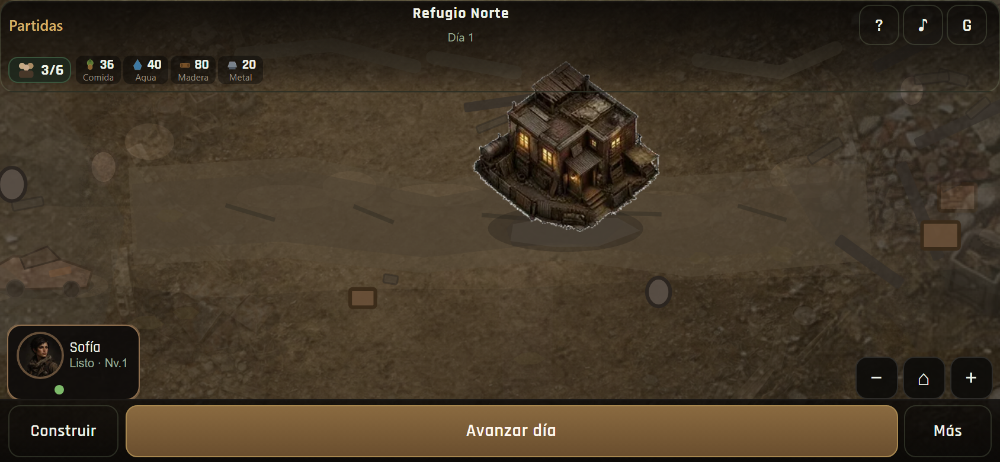
01 · D1 normal 844×390Mundo coherente · sin build
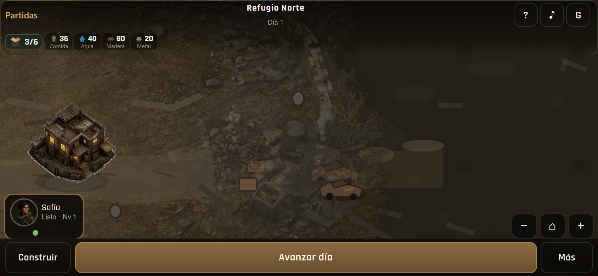
02 · Pan zona urbanaRuinas / props · no polígonos negros
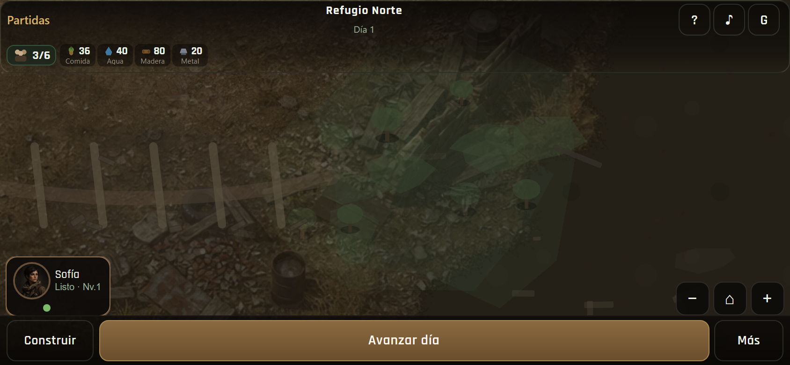
03 · Pan zona abiertaVerde / menos denso
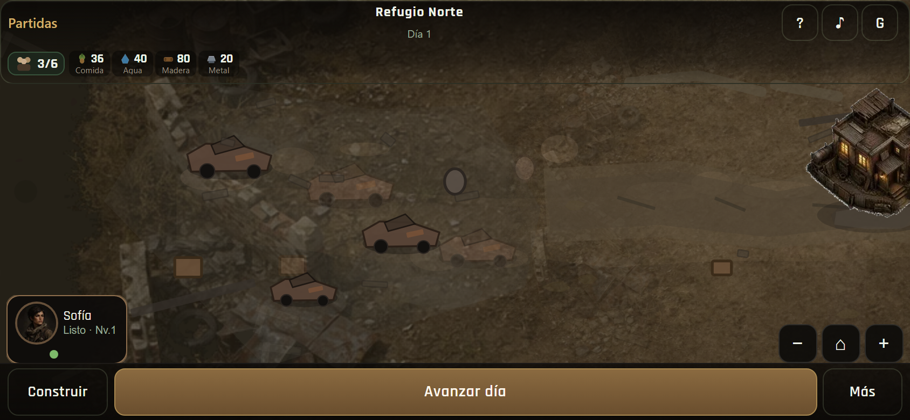
04 · CarreteraBordes + suciedad + grietas
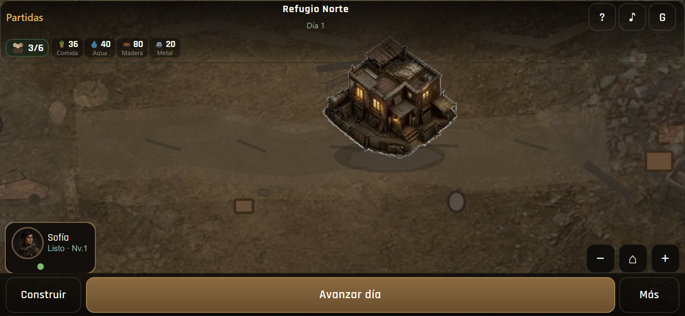
05 · HQ integradoSombra contacto / asentamiento
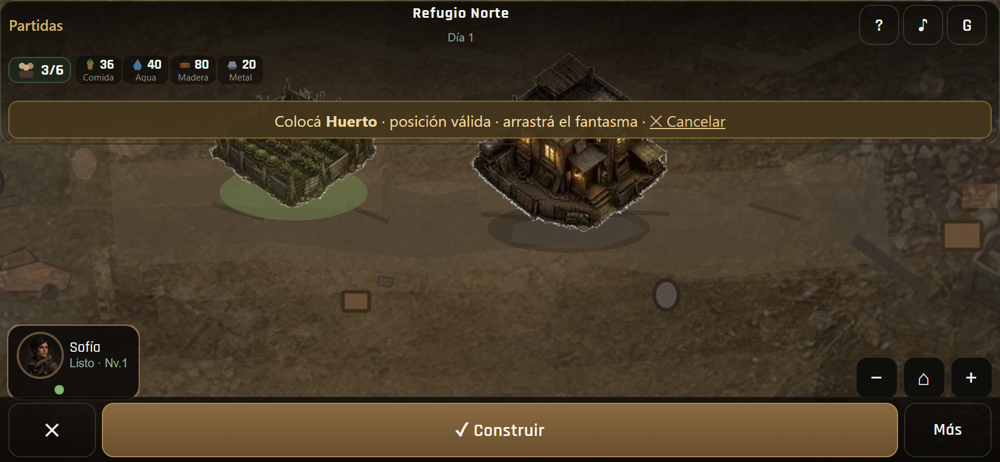
06 · Build modeSeñal de superficie discreta
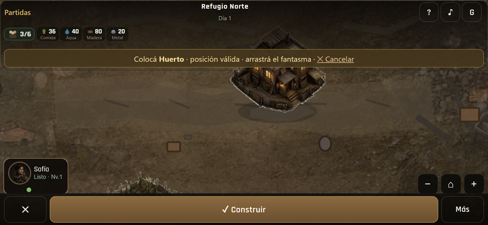
07 · Superficie válidaGhost ✓ · área integrada
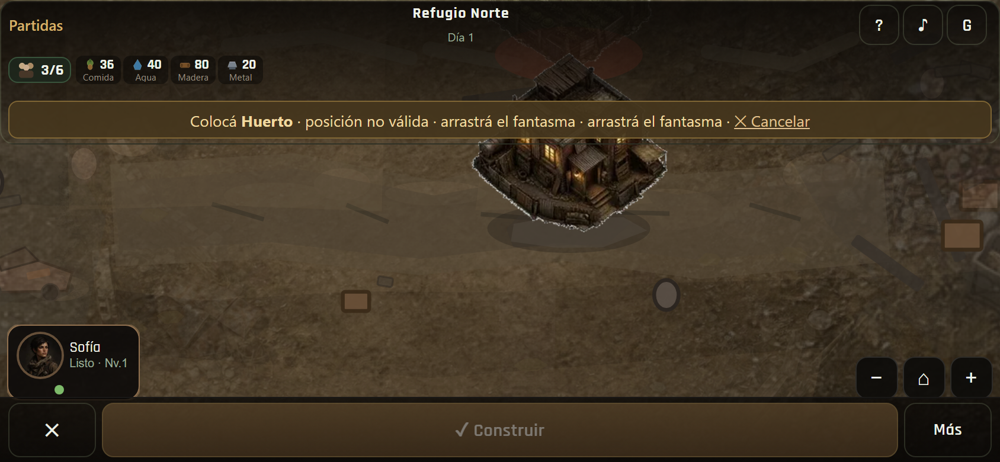
08 · Superficie inválidaGhost ✕ · no GIS dominante
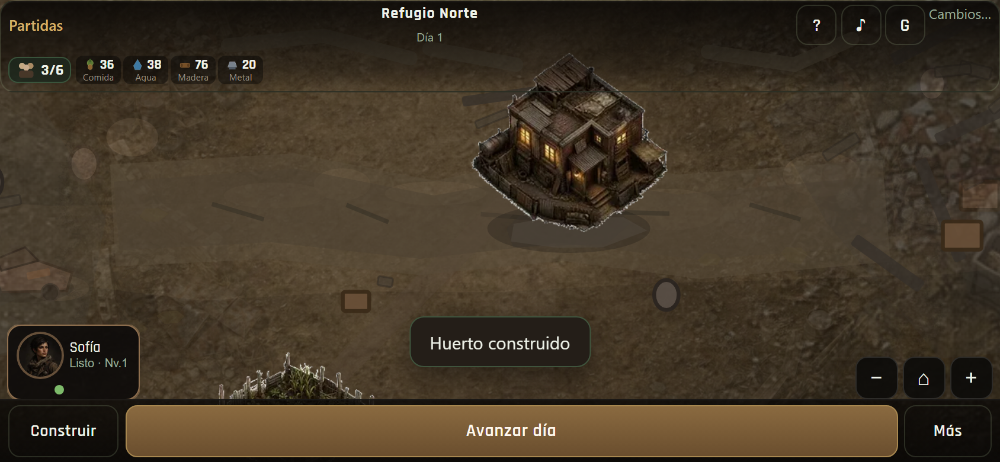
09 · Huerto colocadoIntegración suelo · no pegatina
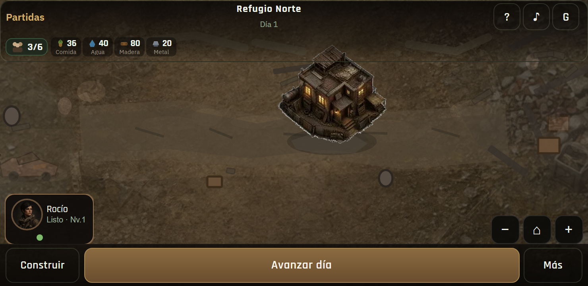
10 · D1 normal 740×360Landscape compacto
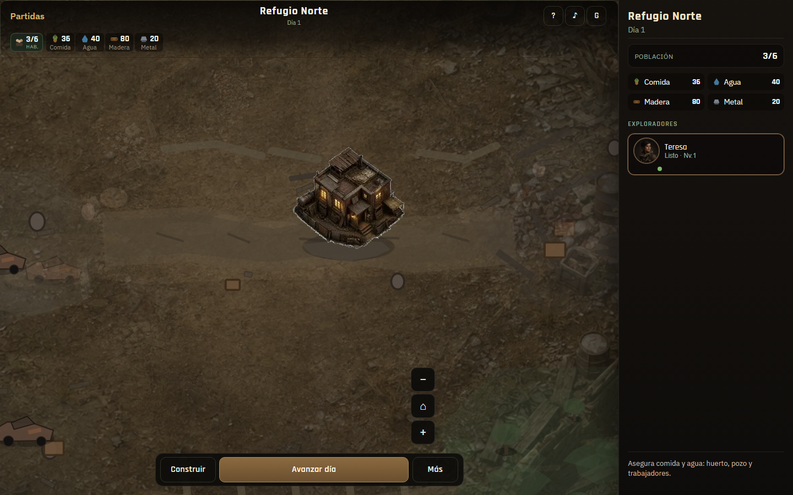
11 · DesktopArquitectura ZZ-014 intacta